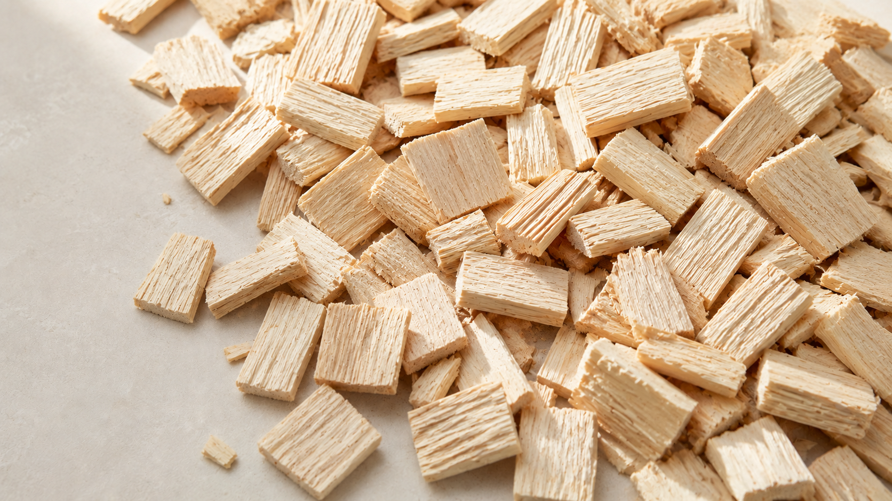
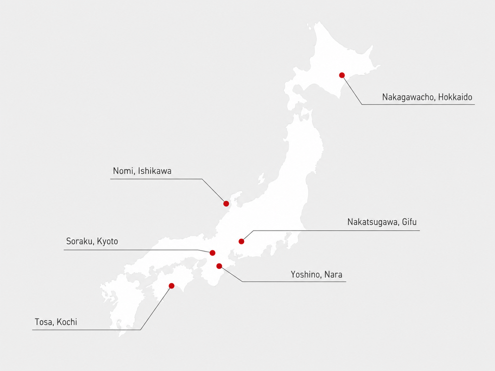
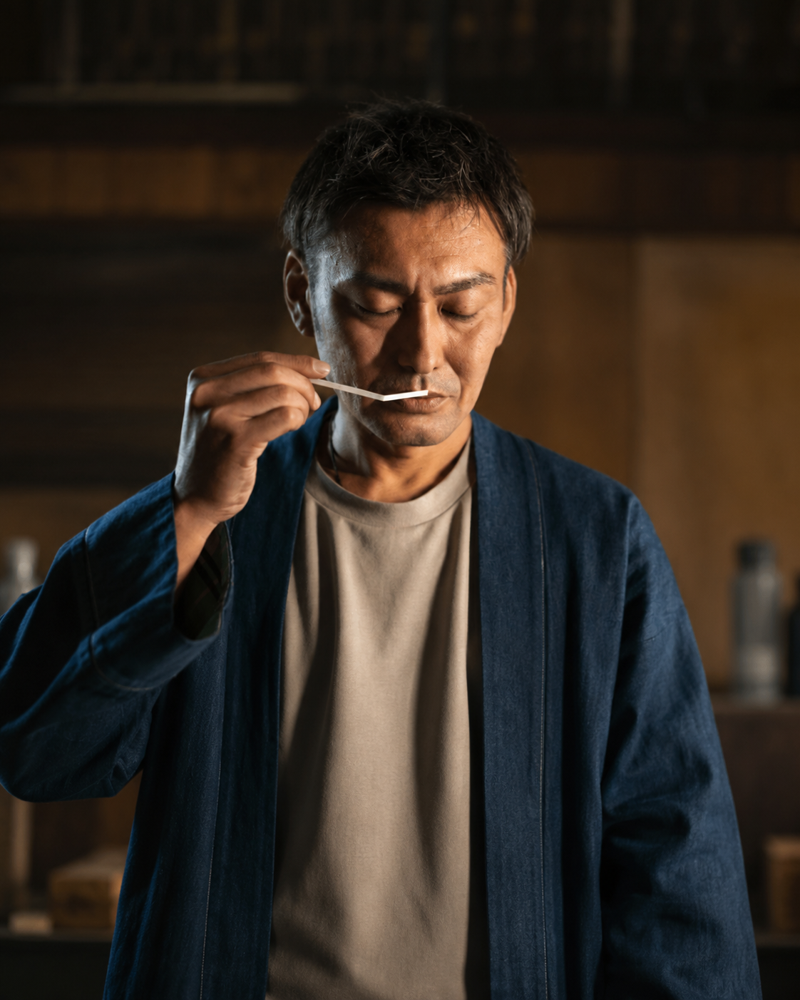

日本の素材、作り手、土地。すべてが一本に宿る。
2008年、KARA INNOVATEは東京で創業した。はじめは小さな調香の仕事だった。ホテルのロビー、セレクトショップの棚、誰かの大切な贈り物。様々な場で求められる香りを届けようとしていた。
そして気づいた。香りは、場所と人の間に静かに宿るものだと。
ヒノキの森、ゆずの産地、伽羅の薫り。それは単なる素材ではなく、土地と人と時間が作り出した物語だった。inimuは、その物語を多くの方に届けていくために生まれた。
WANOWAが使う香りの素材は、すべて産地と作り手が見えるものを選んでいる。
石川県能美市の国造ゆず、岐阜県中津川市の加子母ひのき、そして希少な国産の伽羅。
ひとつひとつの素材に、その土地の時間と気候が宿っている。

伽羅（きゃら）
香木の王。深みとやわらかさを持つ、日本が誇る最高級素材。
ヒノキ
森の清潔感。雨上がりの山道を思わせる、日本人が最も親しむ香り。
ゆず
冬至の記憶。柑橘の明るさの中に、日本の暮らしの温もりがある。
19
年の実績
539
年間 WS 参加者
4.9
Google 評価（238件）

清水 篤（しみず あつし）
株式会社 KARA INNOVATE 代表取締役
香りと出会ったのは、20代のころだった。ある調香師のアトリエで嗅いだ一本が、私の人生を変えた。香りは言葉を持たないのに、人の記憶や感情を瞬時に呼び起こす。その力に、深く魅了された。
2008年に会社を立ち上げ、ホテルやブランドに香りを届けながら、いつか自分たちのブランドをつくりたいと考えていた。浅草に店を開いたのは、日本の文化と観光が交差するこの街で、香りを通じて人と場所をつなぎたいと思ったから。
inimuは、まだ途中にある。これからも香りを通じて、人と人、人と場所をつなぐ仕事を続けていきたい。
この店で出会う香りが、誰かの人生の一部になれたなら。